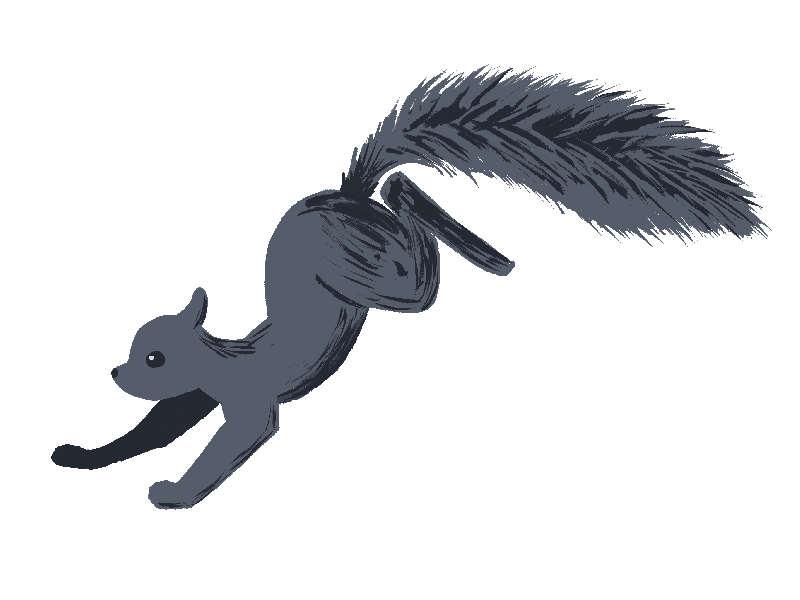
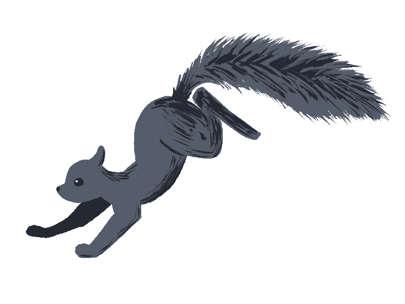

Chestnuts Cafe was founded by one squirrel with naught more than a pile of acorns... and a dream. Winny G Howitzer, a self-proclaimed connoixsseur, had a vision of a classy but comfy hole in a humble tree where community can thrive, the drinks are always hot, and every inch of the store smells like chestnuts— just like squirrelma's kitchen.
And so he got to work, paying the most talented woodpeckers in town to help him sculpt a store that would be the envy of restaurateurs for acres around. Using his connections from his time serving in the SIA (the CIA but for squirrels), he gathered the most ambitious and personable baristas to establish a cafe that no one has stopped talking about since.
So scurry on over and discover your home away from home!